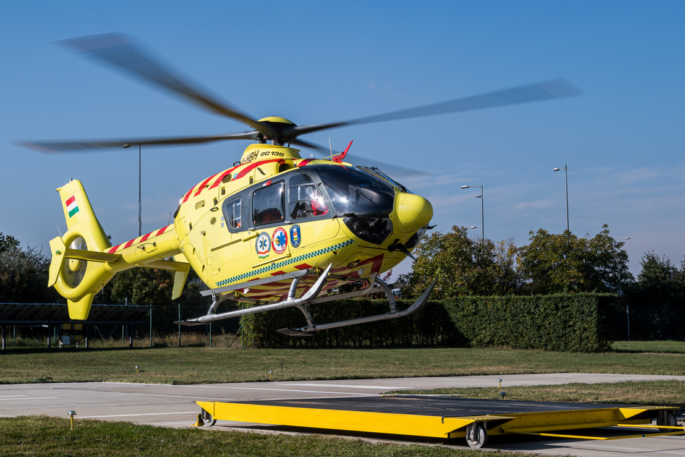
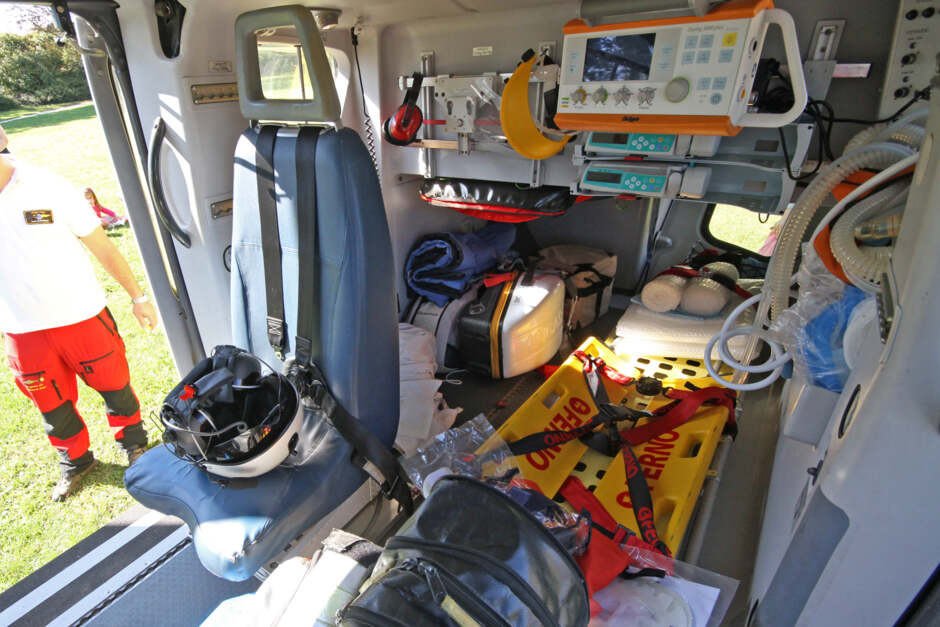

10,2 mTeljes hossz
LÉGIMENTÉS
A segítség, amely percek alatt érkezik
Ismerd meg a magyar légimentés munkáját, a mentőhelikopter felszerelését és azt a technológiát, amely minden bevetésen az életmentést szolgálja.
Fedezd fel
Mi van a helikopteren?
Fedezd fel kívül-belül a légimentő helikoptert, és ismerd meg, hogyan segítik az egyes eszközök a gyors, biztonságos életmentést.

Főrotor
A négylapátos főrotor emeli és irányítja a helikoptert, rendkívül alacsony zaj- és rezgésszinttel.
Faroktörzs
A karcsú faroktörzs és a zárt kialakítású (Fenestron) farokrotor stabilizálja a gépet repülés közben, végén a magyar zászlóval.
Pilótafülke
Innen irányítja a pilóta a gépet, korszerű digitális műszerezettséggel (FCDS) és beépített robotpilóta segítségével.
Mentőjelzések
A jól látható piros-sárga jelzések és a mentőkereszt segítik az azonosítást a levegőből és a földről egyaránt.
Csúszótalpas futómű
Lehetővé teszi a biztonságos le- és felszállást akár egyenetlen, füves terepen is.

Legénységi ülés és sisak
A HEMS technikus/mentő üléshelye, mellette a repülő sisak a kommunikációhoz és védelemhez.
Defibrillátor és monitor
Folyamatosan figyeli a beteg életjeleit, szívmegállás esetén pedig azonnali életmentő beavatkozásra használják.
Mentőhordágy
A sárga Ferno hordágy biztosítja a beteg biztonságos rögzítését a szállítás alatt.
Lélegeztető rendszer
Az oxigén- és lélegeztetőeszközök légzési nehézséggel küzdő betegek ellátásához szükségesek.
Elsősegély-felszerelés
Gyógyszerek, kötszerek és egyéb sürgősségi eszközök, amelyekkel a helyszínen azonnal beavatkozhat a személyzet.
A GÉP, AMELY ÉLETEKET MENT
Airbus Helicopters EC135 P2+
A társaság 9 db állami tulajdonban lévő EC-135 P2+ típusú helikoptert üzemeltet, biztosítva a folyamatos rendelkezésre állást mind a 7 légimentő bázison.
Az EC135 két hajtóműves, könnyű helikopter, amelyet különösen csendes működésre terveztek. Jellegzetes, burkolt Fenestron farokrotora nemcsak a zajt csökkenti, hanem a nyitott lapátokhoz képest kisebb sérülésveszélyt is jelent — ez emberek közelében végzett mentésnél létfontosságú előny.
A típust a Eurocopter Deutschland a leendő üzemeltetők tapasztalatait felhasználva fejlesztette, és 1996-ban kapta meg tanúsítását. Már a tervezőasztalon a valós mentési helyzetek igényeihez igazították, azóta pedig folyamatosan megfelel a szigorodó európai repülésbiztonsági előírásoknak.
A digitális FCDS műszerezettség, a háromtengelyes robotpilóta, az időjárási radar és a mozgótérképes GPS együtt pontos képet ad a személyzetnek a repülési helyzetről. Ha az egyik hajtómű kiesne, a másik automatikusan egymotoros üzemmódra vált, és elegendő tartalékot ad a biztonságos folytatáshoz vagy a feladat befejezéséhez.
Az orvosi felszerelést kifejezetten az EC135 kabinjához alakították. Minden küldetésen háromfős csapat — pilóta, orvos és HEMS technikus — dolgozik együtt, az EASA előírásai és a hatályos magyar jogszabályok szerint.
2 x 667 LEKét hajtómű teljesítménye
284 km/hMaximális sebesség
~2,5 óraRepülési idő tankolás nélkül
4570 mMaximális üzemi magasság
3 főPilóta, orvos és HEMS technikus